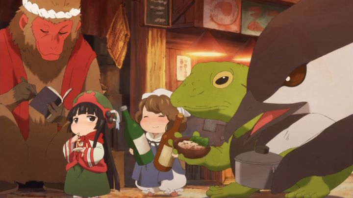

When they first came out, I tended to confuse the 2018 anime "Hakumei and Mikochi" (also given the subtitle "Tiny Little Life in the Woods" in the title card) with the 2017 series "Girls' Last Tour." They aired within months of each other, and both feature a pair of girls, best friends who live with each other in an extraordinary world. Both happen to be excellent shows too, both worthy of your time for their own reasons.I'd describe "Hakumei and Mikochi" as a cross between both "Girls' Last Tour" and "Mushishi," but with a distinct lack of threat or ominous depictions of the world. In this case, the lead characters, Hakumei and Mikochi, are little people, only a couple inches tall, living in the forest together. It's not clear if they're like "The Borrowers" or are forest-sprites or like "Keebler-cookie elves," but it doesn't really matter. The point is they're tiny and cute, seeing everything from the point of view of an ant, living in a furnished home inside a tree. They spend their days exploring, or shopping in a nearby town run by other little people, foxes and frogs, or drinking tea with their neighbor squirrels and beetles. It's adorable.Characters in the show aren't too distinct in personality (they're mostly all peace-loving and cute), but Mikochi is the cool-headed one, a little clumsy, but a talented cook and dress-maker. Hakumei can sometimes seem lazy, but is mostly outgoing and adventurous, and hard-working when it comes to her job as a craftsman. It's assumed they're just friends who live together, although some subtle implications could allow one to read them as a romantic couple. There are some minor moments of drama to expand this world and its history. There are references to Hakumei once being homeless, relying on charity and camping alone outside. The human-like characters tend to dislike beetles, centipedes and other bugs, but they all talk (in appropriately cute voices) and are easy to get along with if given a chance. Curiously, large birds don't speak at all, and appear in the story either as legendary creatures or as threats (like a menacing owl that might not be as dangerous as it appears). There isn't a strong reliance on fantastical magic, although it is revealed that old discarded items have spirits of their own that can come alive, and one character is a "scientist" that can make skeletons move. The world is designed to be quaint like a fairy-tale, relying primarily on fire and steam and candles, but not completely void of technology like electricity or trains. Alcohol, coffee and food are pleasant parts of life, all appearing larger than normal of course (a single coffee bean needs to be ground to make a serving of coffee, and a blueberry is sized and sliced like a full-sized watermelon).  All of this is dressing that makes the world feel detailed, well-realized, and the adventures that help describe the world feel well-written, even if they aren't particularly exciting or important. Each normal-length episode actually contains two or three shorter stories, each feeling just the right length to not be overstay their welcome or risk their delightfulness. It normally bothers me when there isn't some overarching plot or point to a show, but I didn't mind here. "Hakumei and Mikochi" is exactly the type of relaxing slice-of-life anime many people look forward to, and the fantastical setting (despite being ordinary to its inhabitants) is a big selling point to appreciate and help distinguish itself. The anime uses some interesting visual design choices too. The world is detailed and painterly, sometimes enough to bring a tear to the eye. The character designs for the "humans" are short and pudgy, and probably won't appeal to everyone. All they same, they are cute, and there are several well-composed shots in early episodes of them against a river or sunset, pictures worthy of framing. Like a manga or motion-comic, the anime likes to use separate panels of characters or actions overlayed on establishing shots, an economical technique that distracts from otherwise average-television-grade animation. I enjoyed the soundtrack quite a bit, especially the opening and ending themes (the opening's song and visual style reminded me of "Mushishi" again, and the ending is a delightful folk-song, with a unique passage of text and pencil sketches for each episode). Sentai Filmworks gave it an English dub, and I always struggle to enjoy a dub when the characters are overly cute and the story peaceful... so once again, my impression is that it's fine, but not great. Strangely, I noticed the anime was rated 14-A, possibly due to depictions of smoking, alcohol, and one or two instances of foul language; the rating is harsh, as there's no violence or sexual content to speak of, and the series is one of the most family-friendly I can recall. If I told you there was an anime about inch-tall people living in the forest, you'd probably imagine a show very similar to what "Hakumei and Mikochi" is. It goes beyond that in its depiction and imagination, but not by much. Even so, it's delightful and charming, an experience that's between poetry and a children's picture book. Peaceful, adventerous, and with a sense of humor, it's an inspired distraction from the real world.
- "Ani" More reviews can be found at : https://2danicritic.github.io/ Previous review: review_Gunbuster_2 Next review: review_Harmony